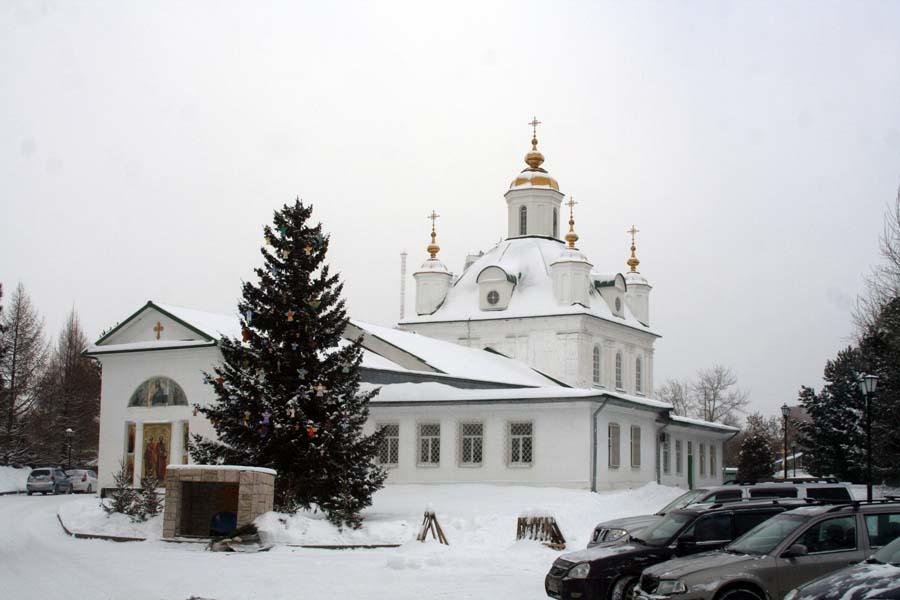

3. Петропавловский собор
Пермь, улица Советская, 1 · Найти на Яндекс Картах

История места
Каменный собор Петра и Павла построили в 1757–1764 годах. Он стал первым каменным зданием Перми. До него в заводском поселении существовала деревянная церковь, освящённая в 1726 году.
Храм был важным местом общественной жизни. Возле него в 1781 году отмечали учреждение губернского города Перми. Указ о создании города и его наименовании Екатерина II подписала в 1780 году.
Значение для Перми и России
Собор связывает два этапа истории: жизнь заводского поселения и появление губернского центра. Это сохранившееся свидетельство ранней каменной застройки и культурного развития города.